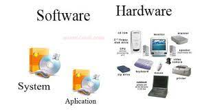

Elementos de un sistema de informacion computacional
Equipo computacional: hardware necesario para que el sistema de información funcione, integrado por computadoras y equipo periférico conectado a ella.
Recurso humano: Son las personas que interactuan con el sistema de información, suministran datos o utilizan el sistema para generar datos.
fuente:Son los datos e informacion que se introducen en el sistema, es decir, son las entradas requeridas para que el sistema informatico funcione.
Programas: Software ejecutado por la computadora, el cual procesa la información de entrada para generar los resultados esperados.
Telecomunicaciones: abarca el software y hadware que permite la transmisión en forma electronica de texto e imagenes entre otro.

Politicas y reglas de operación: Aplicadas a lo procedimientos y mecanismos para hacer que una aplicación de computadora trabaje de acuerdo con estas o regir la parte funcional del proceso abministrativo de la empresa.
Pagina principal